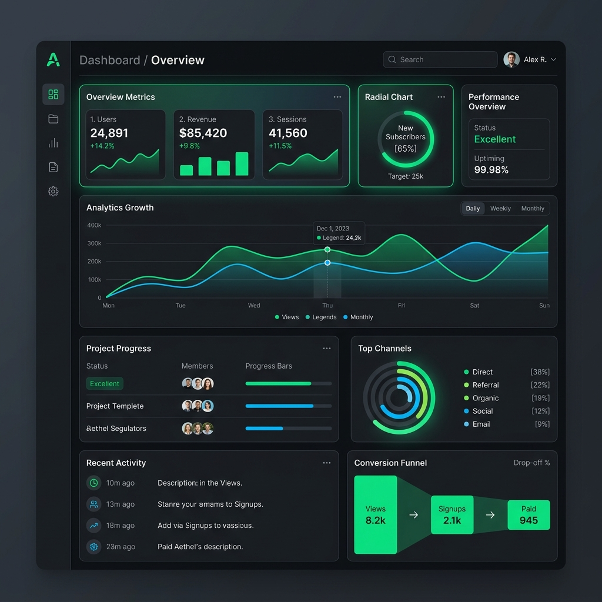

Visión del Producto
El rediseño busca resolver la sobrecarga cognitiva del usuario transformando un reporte estático de texto en un Dashboard SaaS modular e interactivo.
- Diseño "Dark Mode" premium.
- Priorización de visualización de datos (Data-Viz).
- Divulgación progresiva mediante paneles laterales.
